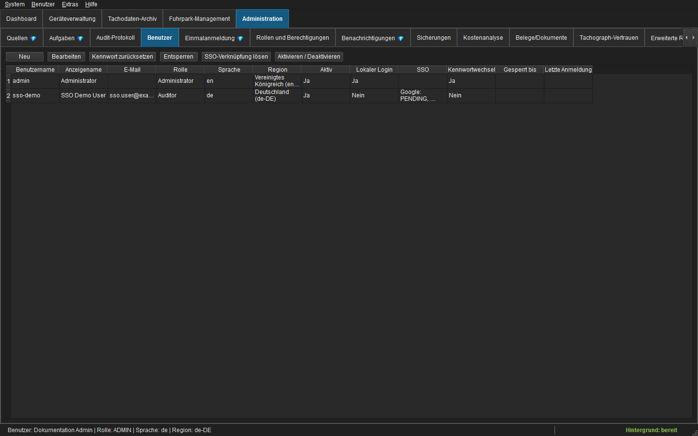
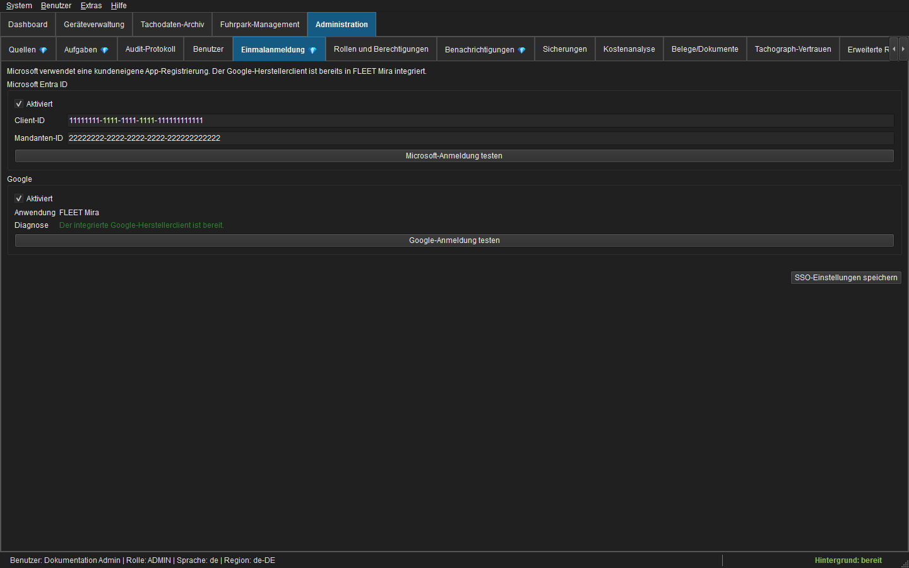
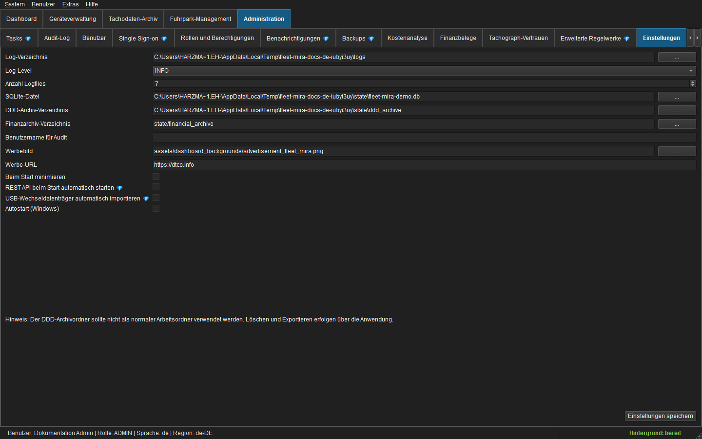
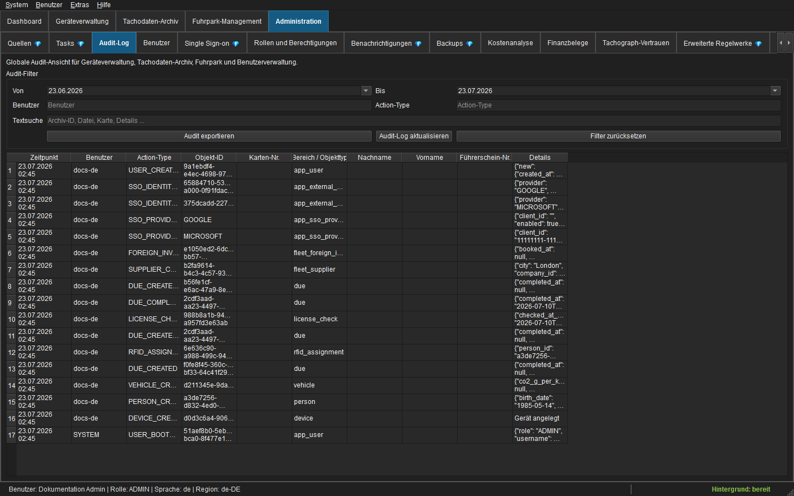
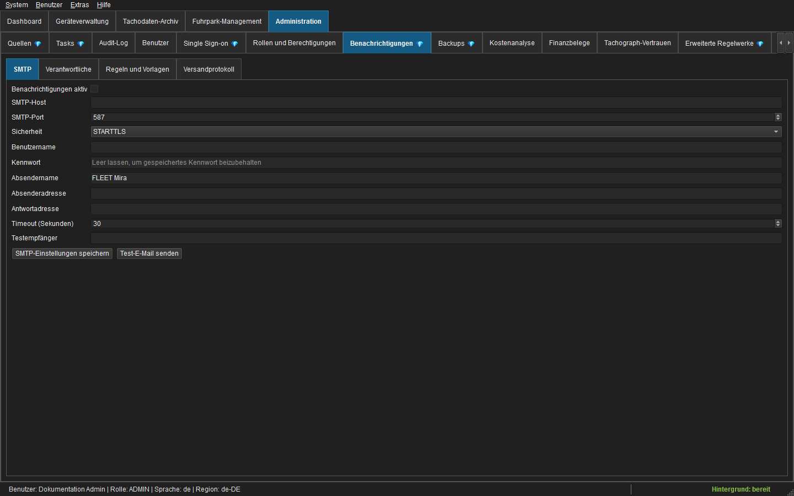
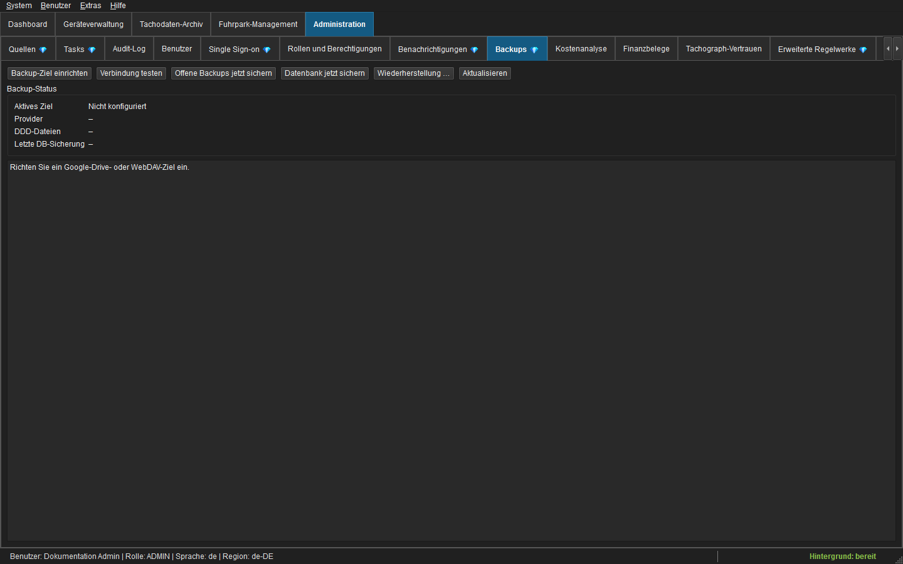

Administratoren- und Integratorenhandbuch¶
1. Deploymentmodell¶
FLEET Mira ist eine Windows-Desktopanwendung mit Hintergrundscheduler. Das Anwendungsverzeichnis enthält Python-Module beziehungsweise den PyInstaller-Build, Assets und Übersetzungen. Veränderliche Daten werden über config.json referenziert:
| Bestandteil | Standard/Zweck |
|---|---|
| SQLite-Datenbank | state/archive.db; Schema und Fachmetadaten |
| Tachodatenarchiv | komprimierte .ddd.gz-Objekte unterhalb des konfigurierten Archivpfads |
| Logs | logs/app.log, REST-Logs und native_crash.log |
| Konfiguration | config.json; Pfade, Quellen, Tasks und Dienstvorgaben |
| UI-Profil | benutzerbezogenes JSON in SQLite plus lokale QSettings-Fenstergeometrie |
Verwenden Sie im Produktivbetrieb absolute Dienstpfade und vergeben Sie Schreibrechte nur an die Anwendungsidentität. Antivirus-Ausnahmen dürfen nur eng begrenzt und nachgewiesen sein; heruntergeladene Originale dürfen nicht pauschal von der Prüfung ausgeschlossen werden.
Erstinstallation¶
- Build und bereitgestellte leere Deploymentdatenbank ausrollen.
- Archiv-, Datenbank- und Logpfade vor dem ersten Import prüfen.
- FLEET Mira starten und
admin/adminanmelden. - Kennwort auf mindestens 12 Zeichen ändern.
- Namensbenutzer anlegen und Rollenbeschränkungen testen.
- Quellen/Tasks, SMTP und Backup in dieser Reihenfolge konfigurieren.
- Backup-/Restore- und Terminallöschtests durchführen und dokumentieren.
2. Benutzer, Rollen und Berechtigungen¶
Kennwörter verwenden Argon2id. Fünf Fehlversuche sperren ein Konto für 15 Minuten. Der letzte aktive Administrator kann nicht deaktiviert werden.

Abbildung: Verwaltung von Benutzern, Rollen, Sprachen und Kontostatus.| Rolle | Typischer Umfang |
|---|---|
| ADMIN | vollständige Administration, Finanzbuchung, Restore und Retention |
| SUPPORT | Geräte-/Quellen-/Taskbetrieb, Archivfehlerbehebung, Fuhrpark/Finanzen lesend |
| OPERATOR | operative Importe, Fuhrparkpflege, FSK und Finanzabläufe |
| AUDITOR | Lesen, Berichte und Exporte ohne Fachänderungen |
Die UI deaktiviert unberechtigte Aktionen; Repositories/Dienste prüfen zusätzlich PermissionService.require(...). Ausgeblendete oder deaktivierte Schaltflächen sind nicht die Sicherheitsgrenze.
Lokale Adminwiederherstellung erfolgt über --reset-admin-password, benötigt Windows-Administratorrechte, setzt nur den initialen Adminzugang auf admin, entsperrt das Konto, aktiviert dessen lokalen Login und erzwingt ein neues Kennwort. Das Kennwort selbst wird nie auditiert. Mindestens dieser lokale Notfallzugang muss erhalten bleiben. Details zur SSO-Einrichtung stehen im folgenden Abschnitt.
Single Sign-on mit Microsoft Entra ID und Google¶
Microsoft Entra ID SSO: Beta – ungetestet
Die Microsoft-Entra-Integration wurde noch nicht Ende-zu-Ende mit einem realen Kundenmandanten produktiv validiert. Verwenden Sie sie bis zur kundenspezifischen Abnahme ausschließlich in Pilot- und Testumgebungen. Ein geprüfter lokaler Notfalladministrator muss verfügbar bleiben; deaktivieren Sie die lokale Anmeldung eines Entra-Benutzers erst nach erfolgreichen Tests mit WAM, Browser-Fallback, MFA und Conditional Access. Dieser Beta-Hinweis gilt nicht für Google-SSO.
FLEET Mira unterstützt mandantengebundene Entra-Arbeits- oder Schulkonten sowie einzeln freigegebene Google-Konten. Hybrid an Entra angebundene Windows-Domänenkonten können über den Windows Account Manager (WAM) Single Sign-on verwenden. Reines AD DS ohne Entra und private Microsoft-Konten sind nicht unterstützt. Rollen und Berechtigungen werden ausschließlich in FLEET Mira vergeben; Gruppen oder Rollen des Identitätsanbieters werden nicht übernommen.
Voraussetzungen:
- FLEET-Mira-Administrator mit
settings.managefür Provider undusers.managefür Zuordnungen; - kundeneigene Entra-App-Registrierung; der Google-Herstellerclient ist bereits in FLEET Mira enthalten;
- Windows 10/11 oder Windows Server ab 2019 für WAM; andernfalls wird der Systembrowser verwendet;
- ausgehender HTTPS-Zugriff zu den Microsoft- beziehungsweise Google-Anmeldeendpunkten;
- freier Loopback-Zugriff auf
127.0.0.1/localhostfür den Browser-Callback; - ein geprüfter lokaler Administrator als Notfallzugang.
Microsoft Entra ID registrieren – Beta¶
- Im Entra Admin Center App registrations > New registration öffnen.
- Einen eindeutigen Namen vergeben und Accounts in this organizational directory only auswählen.
- Unter Authentication > Add a platform den Typ Mobile and desktop applications wählen.
http://localhostundms-appx-web://Microsoft.AAD.BrokerPlugin/<CLIENT_ID>als Redirect-URIs hinterlegen;<CLIENT_ID>durch die Application (client) ID ersetzen.- Allow public client flows aktivieren. Kein Client-Secret anlegen: FLEET Mira ist ein Public Desktop Client.
- Nur die OIDC-Basisberechtigungen und das von MSAL benötigte delegierte
User.Readverwenden. Keine Mail-, Datei- oder Verzeichnisberechtigungen hinzufügen. - Application (client) ID und Directory (tenant) ID kopieren.
- In FLEET Mira Administration > Single Sign-on öffnen, beide IDs eintragen, Microsoft-Anmeldung testen ausführen und erst danach Aktiviert setzen und speichern.
WAM wird zuerst verwendet und unterstützt Windows Hello, MFA und Conditional Access. Ist der Broker nicht verfügbar, öffnet MSAL den Systembrowser mit Authorization Code und PKCE. Der unveränderliche Schlüssel der Verknüpfung ist (tid, oid); UPN und E-Mail dienen nur als erste Zuordnungshilfe.
Die beschriebenen Entra-Schritte bilden den vorgesehenen Einrichtungsweg ab, sind jedoch noch keine produktiv validierte Referenzkonfiguration. Dokumentieren Sie Tenant, Client-ID, Redirects, Consent- und Conditional-Access-Regeln sowie alle Pilotresultate in der kundenspezifischen Abnahme.
Zentralen Google-Login aktivieren¶
Für Google ist keine kundenseitige Cloud-Console-Konfiguration erforderlich. FLEET Mira enthält einen vom Hersteller betriebenen Desktop-OAuth-Client für persönliche Google- und Google-Workspace-Konten.
- Administration > Single Sign-on öffnen.
- Im Bereich Google prüfen, ob als Anwendung FLEET Mira und als Diagnose Der integrierte Google-Herstellerclient ist bereit. angezeigt werden.
- Google-Anmeldung testen wählen. Der Systembrowser öffnet den zentralen FLEET-Mira-Zustimmungsdialog; bei der ersten Verwendung kann Google eine Zustimmung zu Basisprofil und E-Mail verlangen.
- Nach erfolgreichem Test Aktiviert auswählen und SSO-Einstellungen speichern wählen.
- Unter Administration > Benutzer die Google-E-Mail der zugelassenen Personen vorab zuordnen. Weitere Google-Zugangsdaten sind nicht erforderlich.
Fehlt die integrierte Konfiguration oder ist sie beschädigt, bleibt der Aktivierungsschalter gesperrt und die Diagnose weist auf einen fehlerhaften Software-Build hin. Wenden Sie sich in diesem Fall an den FLEET-Mira-Hersteller; importieren oder hinterlegen Sie keinen eigenen OAuth-Client.
Der Browser-Callback bindet nur an 127.0.0.1 mit einem zufälligen freien Port. FLEET Mira verwendet Authorization Code mit PKCE und prüft Signatur, Aussteller, Zielgruppe, Ablauf, Nonce und email_verified. Der dauerhafte Schlüssel ist (iss, sub); die E-Mail-Adresse dient nur der ersten Zuordnung und darf sich danach ändern. Google-SSO speichert keine Refresh-Tokens und verwendet weder Token noch Clientkonfiguration des Google-Drive-Backups. Die Scopes bleiben auf openid, email und profile beschränkt.

Abbildung: Entra-Konfiguration im ungetesteten Beta-Status und aktivierbarer, regulär unterstützter Google-Herstellerclient.Benutzer zuordnen und lokalen Login steuern¶
- Administration > Benutzer öffnen und einen Benutzer neu anlegen oder bearbeiten.
- Lokale Rolle, Sprache, Region und Kontostatus festlegen.
- Für Microsoft die erwartete UPN unter Microsoft-UPN, für Google die verifizierte Adresse unter Google-E-Mail eintragen.
- Soll das Konto ausschließlich SSO verwenden, Lokale Anmeldung ausschalten. Bei einem neuen SSO-Konto ist dann kein temporäres Kennwort erforderlich.
- Beim ersten erfolgreichen Provider-Login bindet FLEET Mira die unveränderliche Provider-ID atomar an genau diesen Benutzer. Der Status wechselt von
PENDINGaufLINKED. - Nach erfolgreicher Pilotanmeldung Zuordnung, lokale Rolle und Auditereignisse prüfen.
Unbekannte Konten werden niemals automatisch angelegt. Für eine Neuverknüpfung SSO-Verknüpfung lösen wählen; die Freigabe bleibt PENDING und kann mit dem nächsten passenden Provider-Login neu gebunden werden. Zum vollständigen Entfernen anschließend die erwartete UPN/E-Mail im Benutzerdialog leeren. Ein deaktivierter Benutzer kann sich weder lokal noch per SSO anmelden. Der letzte lokale Administrator kann nicht auf SSO-only umgestellt werden.
Abbildung: Lokaler Login, vorab freigegebene SSO-Konten und Verknüpfungsstatus.
Betrieb, Offboarding und Störung¶
- App-Abmeldung beendet nur die lokale Sitzung; Windows-, Microsoft- und Google-Sitzungen bleiben bestehen.
- Bei Provider- oder Netzwerkausfall dürfen nur Benutzer mit aktiviertem lokalen Login ausweichen.
- Microsoft Entra bleibt bis zur dokumentierten kundenspezifischen Prüfung von WAM, Browser-Fallback, MFA und Conditional Access eine Beta-Funktion; bis dahin keinen Benutzer ausschließlich von Entra abhängig machen.
- Beim Offboarding zuerst den lokalen Benutzer deaktivieren, anschließend Providerkonto und Consent sperren und die Zuordnung dokumentiert lösen.
- Entra-Clientrotation führt der Kundenadministrator wie bei der Ersteinrichtung durch. Den zentralen Google-Client rotiert ausschließlich der Hersteller über einen neuen FLEET-Mira-Build; vorhandene
(iss, sub)-Verknüpfungen bleiben erhalten und sind mit Pilotkonten zu prüfen. - ID-, Access- und Refresh-Tokens sowie vollständige Claims dürfen weder in Datenbank noch Audit oder Logs erscheinen.
- SSO-Ereignisse
SSO_LOGIN_*,SSO_IDENTITY_*undSSO_PROVIDER_CONFIG_UPDATEDregelmäßig zusammen mit den Provider-Anmeldelogs prüfen.
| Symptom | Prüfung und Maßnahme |
|---|---|
| Entra-Beta noch nicht abgenommen | Lokalen Login aktiviert lassen und den vollständigen Pilotablauf mit WAM, Browser-Fallback, MFA und Conditional Access in einem realen Kundenmandanten dokumentieren. |
| Falscher Entra-Mandant | Tenant-ID und tid des Kontos prüfen; Multi-Tenant- oder Privatkonto ist nicht zulässig. |
| Redirect-Fehler | http://localhost und den WAM-Redirect exakt in der Desktopplattform registrieren. |
| Konto nicht zugeordnet | Erwartete UPN/E-Mail, Provider und Kontostatus in der Benutzerverwaltung prüfen. |
| WAM/Broker nicht verfügbar | Windows-Version und Brokerpaket prüfen; der Systembrowser-Fallback muss funktionieren. |
| Loopback/Timeout | Lokale Firewall, Proxy, Browserstart und Bindung an 127.0.0.1 prüfen; danach erneut anmelden. |
| Google-Herstellerclient fehlt/ungültig | Diagnose unter Single Sign-on prüfen und einen korrigierten FLEET-Mira-Build beim Hersteller beziehen. Keine kundeneigene Clientdatei importieren. |
| Google-Consent abgelaufen/blockiert | Anmeldung erneut starten; bei einer Workspace-Sperre die Organisationsrichtlinie prüfen. Branding, Veröffentlichung und zentralen Clientstatus prüft der Hersteller. |
| Browserabbruch | Anmeldung erneut starten; es wird keine lokale Sitzung und keine Identitätsbindung erzeugt. |
Pilot- und Produktivcheck: Provider-Test erfolgreich, Pilotidentität LINKED, unbekanntes Konto abgewiesen, Audit ohne Tokens kontrolliert, lokaler Recoveryzugang getestet und Offboarding probeweise durchgeführt. Microsoft Entra darf erst nach zusätzlicher erfolgreicher Abnahme von WAM, Browser-Fallback, MFA und Conditional Access in einem realen Kundenmandanten als produktiver Anmeldeweg bewertet werden; bis dahin bleibt es Beta und ungetestet.
3. Sprachen, Regionen und UTC¶
Neue Installationen starten Englisch/en-GB. Benutzer können jede registrierte Sprache/Region wählen. Datepicker, Zahlen und Währung folgen der Region; Datenbank/API bleiben ISO. Tachographenzeitwerte, Vergleiche, Tages-/Wochengrenzen und Verstoßberechnungen bleiben aktuell ausschließlich UTC. Die Locale darf keine Zeitzonenumrechnung einführen.
Kataloge liegen unter translations/<sprache>.json. Englisch ist Fallback. Fehlende Produktivschlüssel erzeugen I18N_MISSING und schlagen im Katalogparitätstest fehl.

Abbildung: Administrative Anwendungseinstellungen.4. SQLite und Migrationen¶
Migrationen laufen einmal beim Start, bevor Repositories UI-Aufträge bedienen. Eine laufende Datenbankdatei darf nie direkt als Backup kopiert werden.
Betriebsempfehlungen:
- Datenbank und Archiv auf zuverlässigem lokalen Speicher halten;
- freien Speicher und fehlgeschlagene Backupjobs überwachen;
- konsistente Snapshots nur über die integrierte SQLite-Backup-API erzeugen;
- nach Restore/Wartung
PRAGMA integrity_checkausführen; - vor manueller Dateiwartung Anwendung und Dienste beenden;
- Audit-, Signatur- und Finanztabellen niemals direkt ändern.
Die Deploymentdatenbank darf nur Schema/Standardwerte enthalten, keine Personen, Fahrzeuge, DDD-Dateien, Belege, Zugangsdaten oder Auditverläufe.
5. Scheduler, Quellen und Tasks¶
Der Hintergrundscheduler startet unabhängig von einer UI-Anmeldung als SYSTEM. Unterstützt werden FTP und DLT-API; jeder Netzwerkzugriff benötigt Verbindungs-/Lesetimeout.
flowchart TD
A[Zeitplan oder Sofort starten] --> B[Passende Remoteobjekte listen]
B --> C[Kontrolliert lokal herunterladen]
C --> D[Hash, Klassifizierung und Archiv]
D --> E[Parser/Signatur oder RFID-CSV]
E --> F[Verknüpfungen und Fälligkeiten]
F --> G[Cloudbackup einreihen]
G --> H{Strenger Backupmodus?}
H -->|Nein| I[Verarbeitet markieren / optional Terminal löschen]
H -->|Ja| J[Verifiziertes Cloudobjekt abwarten]
J --> IEin technischer Fehler vor dauerhafter Archivierung darf das Terminalobjekt weder markieren noch löschen. Hashdubletten setzen offene Backup-/Fälligkeitsarbeit fort, ohne ein zweites Archiv anzulegen.
6. Tachodatenarchiv und Signaturvertrauen¶
Der Dispatcher klassifiziert DRIVER_CARD, VEHICLE_UNIT oder UNKNOWN. C-Dateien verwenden G1 RSA/SHA-1 beziehungsweise G2-ECDSA-Ketten; M-Dateien prüfen signierte Downloadsektionen für G1/G2/G2V2. cryptography ist Pflichtabhängigkeit.
Priorität: INVALID → UNVERIFIABLE → VALID. Der Parserstatus wird auf verifiziert, verifiziert mit Warnungen oder Quarantäne abgebildet. Quarantäne löscht das Original nie, sperrt aber vertrauenswürdige Zuordnung, C-/M-Abgleich, Verstoßsnapshot und „neueste vertrauenswürdige Datei“.
Truststore-Updates erfolgen administrativ, explizit und auditiert. Quelle, Manifest und festgelegte Fingerprints sind zu prüfen. Zertifikate dürfen nicht unbemerkt von beliebigen Servern vertraut werden.
7. Audit und Diagnose¶
Das globale Audit normalisiert Geräte-, Tachodaten-, Fuhrpark-, Finanz-, Benutzer- und Backupergebnisse. Einträge enthalten UTC-Zeit, Akteur/User-ID, Rolle, Ursprung, Aktion, Objekttyp/-ID, Ergebnis, Korrelations-ID und bereinigte Vorher-/Nachherdaten. Kennwörter, Tokens, API-Keys und Binäroriginale sind verboten.
app.log ist das vollständige Applikationslog mit Scheduler, Downloads, Importen, Jobs, Cachezeiten, Backup und Dienstfehlern. Technische Texte sind immer Englisch. native_crash.log erfasst über faulthandler Prozessfehler nach Initialisierung der Diagnose; Fehler vor Pythonstart können dort nicht erscheinen.

Abbildung: Auditnachweise im Zusammenspiel mit der technischen Diagnose.Der UI-Heartbeat schreibt UI_STALL, wenn die Ereignisschleife länger als eine Sekunde blockiert. Nach Erholung folgt die Dauer. Job-, Request- und Korrelations-IDs verbinden UI-, Dienst- und Auditvorgänge.
8. UI-Jobbetrieb¶
Teure Abfragen/Berechnungen verwenden workerlokale SQLite-Verbindungen; Qt-Widgets werden nur im GUI-Thread verändert. Leseaufträge, serialisierte Schreibaufträge und niedrig priorisiertes Vorladen nutzen getrennte Spuren. Neue Filter-/Datumsanforderungen brechen alte Generationen ab; das Schließen eines Tabs bricht dessen Aufträge ab.
Performanceprobleme werden über Warte-, Datenbank-, Rechen-, Render- und Gesamtdauer analysiert. processEvents()-Schleifen oder modale Wartefenster dürfen nicht als Ersatz für Hintergrundarbeit zurückkehren.
9. Führerscheinkontrolle und Benachrichtigung¶
PC/SC liest die UID mit FF CA 00 00 00 und normalisiert Großbuchstaben-Hex. Eine UID ist höchstens einer Person aktiv zugeordnet; eine Person besitzt höchstens eine aktive UID.
Terminal-CSV: UID;DD.MM.YYYY;HH:mm:ss;Hostname. Datei-/Zeilenfingerprints sichern Idempotenz. Unbekannte, inaktive oder zeitlich unpassende UIDs bleiben Klärfälle.
SMTP unterstützt STARTTLS/TLS; das Kennwort ist DPAPI-geschützt. Standardregeln erzeugen Fahrerhinweise und täglichen Verantwortlichenbericht. Für Zeitversand muss Desktop-/Trayprozess laufen; verpasste Läufe werden nur am selben Tag nachgeholt. Idempotenz verhindert doppelte automatische Mails je Regel/Objekt/Empfänger/Tag.

Abbildung: Administration von SMTP, Empfängern, Regeln und Versandprotokoll.10. Finanzen und Belegarchiv¶
Finanzdaten werden in Cent und EUR gespeichert. Fremdrechnungen benötigen exakte Kopf-/Positionssummen und mindestens einen lokal verifizierten Originalbeleg vor der Prüfung. Der Backupstatus ist dafür unerheblich. Buchung macht Fachdatensätze unveränderlich; Korrekturen erfolgen per Storno/Gutschrift.
Originale sind keine SQLite-BLOBs. Das Belegarchiv übernimmt, hasht, lädt hoch, liest zurück und verifiziert. Metadaten enthalten Ziel, Remote-Pfad/-ID, Hash, Größe, Version und Retention. Ein Ziel kann nicht gelöscht werden, solange Belege darauf verweisen.
FiBu-Übergabe: REST oder CSV/ZIP. Nur gebuchte Datensätze sind exportierbar; REST verwendet eine persistente idempotente Outbox.
11. Backup und Notfallwiederherstellung¶
Genau ein Google-Drive- oder HTTPS-WebDAV-Ziel kann aktiv sein. AES-256-GCM ist optional und vorausgewählt. Vor Aktivierung ist Recovery-Key-Export/-Bestätigung Pflicht.

Abbildung: Administration von Cloudziel, Backupwarteschlange und Restore.Archive werden unmittelbar gesichert, DB-Snapshots standardmäßig 02:00 UTC. Retention: 30 Tages- und 12 Monatsstände. DDD-Cloudobjekte werden nie automatisch gelöscht. Details: Cloud-Backup und Restore.
SSO-Aktivierung, Entra-Konfiguration und Identitätszuordnungen liegen in SQLite und sind damit Bestandteil des Datenbanksnapshots. Der zentrale Google-Client ist Teil des Software-Builds; Provider-Tokens werden nicht gesichert. Nach einer Wiederherstellung sind lokaler Notfallzugang und beide SSO-Verfahren erneut zu testen. Microsoft Entra bleibt auch nach einem erfolgreichen Restore im Beta-Status, bis WAM, Browser-Fallback, MFA und Conditional Access im wiederhergestellten Kundenkontext dokumentiert abgenommen wurden.
Mindestens vierteljährlich sind Datenbanksnapshot und repräsentative C-/M-Objekte isoliert wiederherzustellen, Hash/Integrität zu prüfen und das Ergebnis zu dokumentieren.
12. REST und Integrationen¶
- DriverCard REST bindet standardmäßig
127.0.0.1und stellt Fahrerkartenauswertungen bereit. - FiBu REST sendet gebuchte Rechnungsmetadaten und Originale an HTTPS.
- Mobile FSK-Endpunkte bilden bei Aktivierung eine separate Fleet-API.
Lokale Entwicklungsendpunkte dürfen nicht direkt öffentlich erreichbar sein. Externe APIs benötigen Authentifizierung, TLS, Rate-Limit und Netzwerkzugriffskontrolle.
13. Technische Legacy-Kennungen¶
Der sichtbare Produktname ist FLEET Mira. Aus Kompatibilitätsgründen bleiben erhalten:
- Repository-/Projektverzeichnis und
DLTNGDownloadTool.spec; - technische EXE-/InternalNames, soweit Upgrades betroffen sind;
- SQLite-Tabellen/-Spalten, Konfigurationsschlüssel und Ereigniscodes;
- DriverCard/API-Pfade und Payloadfelder;
- Remotepräfix
DLTNG/<Installations-ID>/..., Manifest-Magic und bestehende User-Agents.
Dies sind Protokoll-/Speicherkennungen, kein sichtbares Produktbranding. Änderungen erfordern eine separat versionierte Migration.
14. Sicherheitscheckliste¶
- [ ] Namensbenutzer; Initialkennwort geändert
- [ ] Rollenmatrix mit Nicht-Admin getestet
- [ ] Datenbank-/Archiv-ACLs eingeschränkt
- [ ] Quellen-, SMTP-, Backup- und REST-Secrets geschützt
- [ ] WebDAV-HTTPS-Zertifikat, separater Google-Drive-Client und integrierte Google-SSO-Diagnose geprüft
- [ ] Entra-Beta mit WAM, Browser-Fallback, MFA und Conditional Access in einem realen Kundenmandanten getestet; lokaler Fallback weiterhin aktiv
- [ ] Recovery-Key offline verwahrt und Zugriff dokumentiert
- [ ] strenger Terminallöschmodus gemäß Richtlinie gewählt
- [ ] Audit-/Logretention und Rotation überwacht
- [ ] Signatur-Truststore kontrolliert aktuell
- [ ] DB-Backup und Archivwarteschlange überwacht
- [ ] Restore-Test durchgeführt und dokumentiert
- [ ] Verfahrensdokumentation deckt Retention, Scan und rechtliche Prüfung ab
15. Störung und Wiederherstellung¶
- Bei Integritäts-, Ransomware- oder Credentialverdacht automatische Schreibvorgänge stoppen.
app.log,native_crash.log, Konfiguration und relevante Auditexporte sichern.- Betroffene Quellen-, SMTP-, SSO-App-Registrierungen, Google/WebDAV- und API-Zugänge sperren/rotieren; siehe SSO-Betrieb und Offboarding.
- Lokale Archivhashes und Remotemanifeste prüfen.
- Zuerst isoliert wiederherstellen; nie die einzige DB-Kopie überschreiben.
- Integrität/Hashes prüfen und Backupstatus abgleichen.
- Dienste erst nach dokumentierter Ursache, Credentialbereinigung und erfolgreichem Recovery starten.
16. Build- und Releaseprüfung¶
Vor Release: Anwendungstests, Katalogparität, Dokumentationsprüfung, mkdocs build --strict --clean, PyInstaller-Smoke-Test und Start mit leerer Deploymentdatenbank. Deutsche/englische Screenshots müssen FLEET Mira zeigen und frei von Betriebsdaten sein.